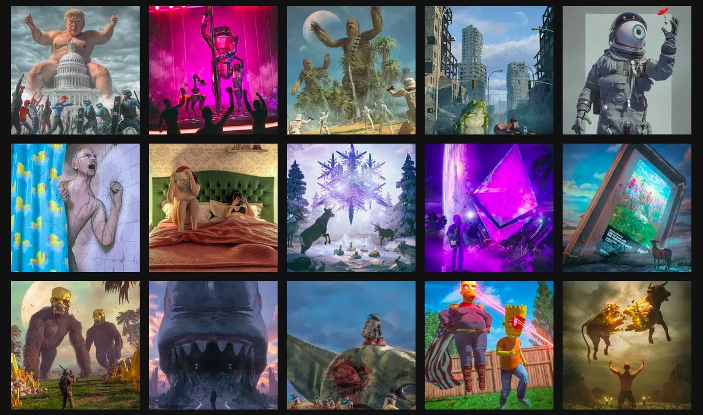

Beeple.
Beeple sold an NFT for $69 million
Until October, the most Mike Winkelmann — the digital artist known as Beeple — had ever sold a print for was $100. Today, an NFT of his work sold for $69 million at Christie’s. The sale positions him “among the top three most valuable living artists,” according to the auction house.
How Beeple Crashed the Art World
An N.F.T., or “non-fungible token,” of the digital artist’s work sold for sixty-nine million dollars in a Christie’s auction. It’s good news for crypto-optimists, but what about for art?
We talked with Beeple about how NFT mania led to his $69 million art sale
"I honestly, like, I never thought I could sell my work," Beeple said in an interview at his home in South Carolina. "Kind of late September, early October, people kept hitting me on being like, 'Oh, you got to look at this NFT thing.'"
Jpeg file by digital artist Beeple sells for over $69 million at NFT auction
The artwork, titled Everydays: The First 5000 Days, was listed by Christie's on February 25 for only $100, becoming the first purely digital artwork backed by a non-fungible token (NFT) to be put under the hammer by a major auction house.
Everydays: The First 5000 Days - Will Gompertz reviews Beeple's digital work
Mike Winkelmann is an American graphic designer. In May 2007 he drew an image of his Uncle Joe, called it Uber Jay (Mike's nickname for his uncle) and shared it online. The next day he made another image and once again posted it online. He did the same thing the next day, and then the next day.
This is Shrek
What did you expect?
Prices in a ‘Bubble,’ Beeple Says After His $69 Million NFT Sale
NFT art is “absolutely” in a bubble, said the digital artist who this month sold a non-fungible token of his piece “Everydays: The First 5000 Days” for an eye-watering $69.3 million.
'Excitement around NFTs:' Beeple reflects on selling digital NFT art for almost $70M'
When digital artist Beeple put an NFT digital artwork up for auction this month, he became instantly famous when it sold for almost $70 million. The record sale also sparked huge interest in digital certificates of authenticity based on cryptocurrency technology that are called “non-fungible tokens.”